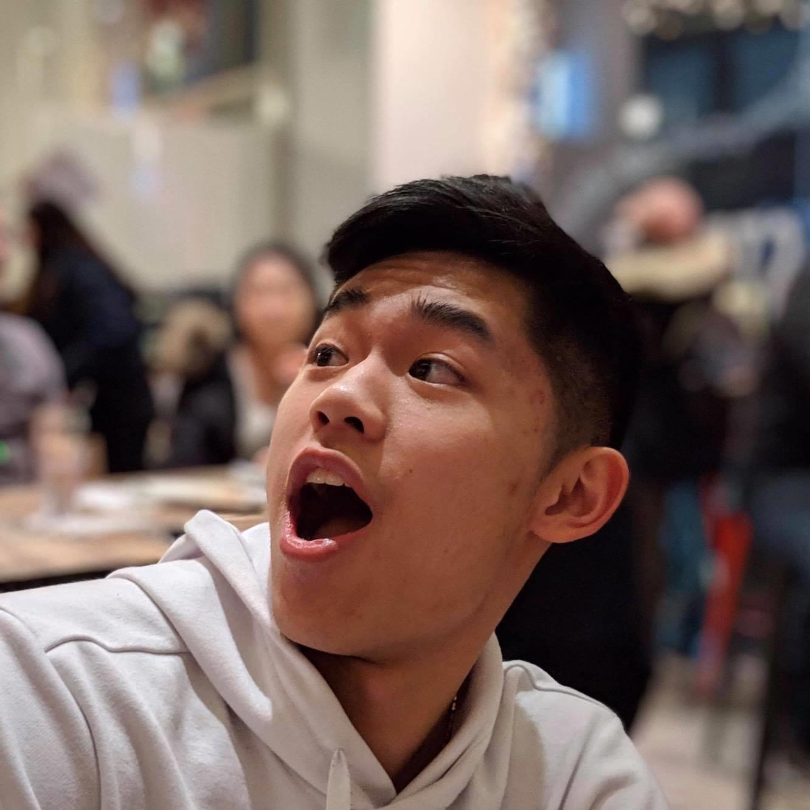

Computers and technology have been an integral part of my life ever since I was young, and from a young age, I played a lot of video games. As I grew up, my love for video games lead me to a desire to make my own games, and as a natural progression, to programming. Since then, I have taught myself a number of programming languages, and learned even more throughout my educational career, and my desire to make video games developed into a passion for programming and problem solving. Nowadays, I still enjoy playing games with friends, and have developed a passion for cooking, and especially eating, good food.
Playing in Traffic is a project I did with a team in high school that competed at a statewide Video Game Design Competition in association with TSA. I've recently gotten together with my old teammates to revamp our project and commercialize it, and we are currently working on adding features such as online multiplayer and optimizing gameplay elements, as well as designing new art assets to release our game for purchase.
Into the Dungeon is another project that I worked on in high school with the same team as the Playing in Traffic team. This game features random dungeon generation and an endless mode for endless play. As with Playing in Traffic, our team is working on making changes to Into the Dungeon before we release it to the public for purchase.